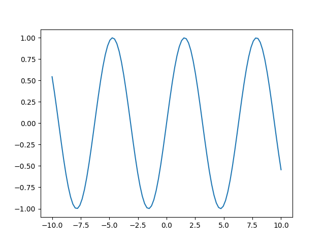
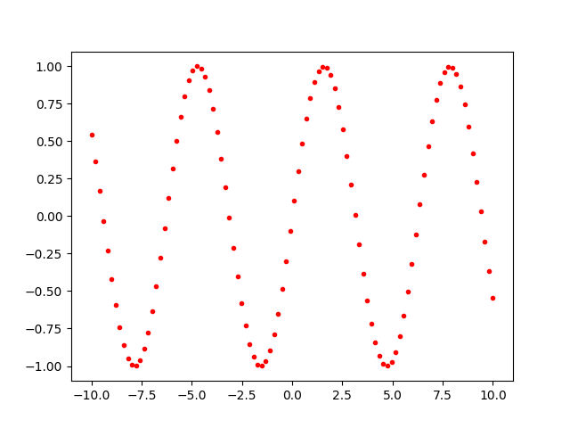
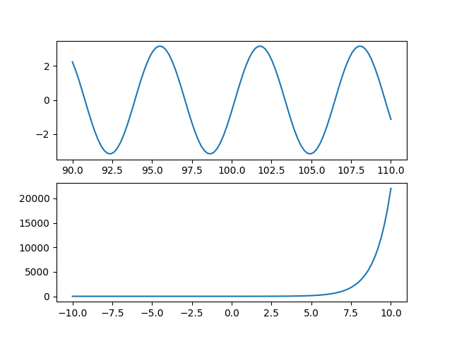
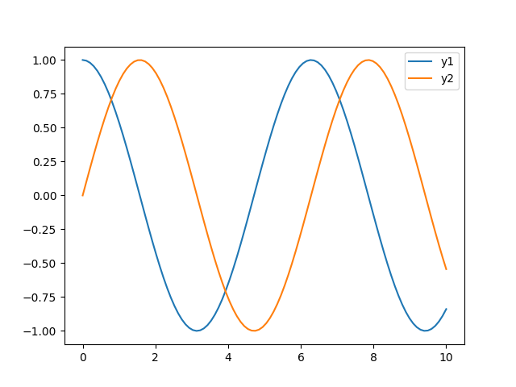
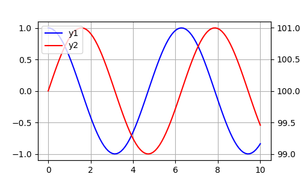
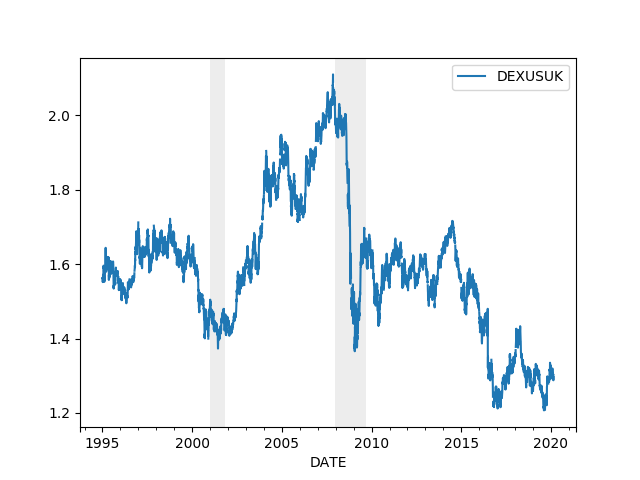
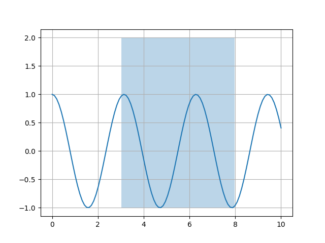
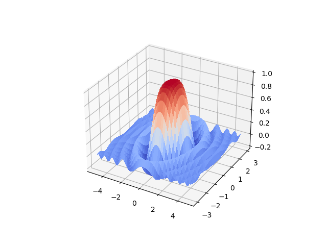

Grafiklemek, Matplotlib, Pandas
Basit X-Y grafikleri, ikili, üçlü, iki eksenli, üç boyutlu grafikleri bu yazıda işleyeceğiz.
Giriş
En basit grafik,
import matplotlib.pyplot as plt
x = np.linspace(-10,10,100)
y = np.sin(x)
plt.plot(x,y)
plt.savefig('graf_01.png')


Önceki metot tüm noktaları birleştiriyor. Eğer birleştirilmesini
istemesek nokta nokta olarak her veri öğesinin basılmasını istesek
plot içinde . kullanırdık.
plt.plot(x,y,'r.')
plt.savefig('graf_02.png')


Renkleri de aynı komutta belirtilebiliyoruz. Üstteki r kırmızı (red) için.
Eksenler
Çoğu zaman aynı imajda birden fazla grafik olmasını isteyebiliyoruz, karşılaştırma amacıyla, vs. Alt alta iki grafik için çabuk bir şekilde
x2 = x+100
y1 = np.cos(x2) + 3*np.sin(x2)
y2 = np.exp(x)
fig, axs = plt.subplots(2)
axs[0].plot(x2,y1)
axs[1].plot(x,y2)
plt.savefig('graf_03.png')


Üstteki örnekte x ekseni farklı, çünkü değerlerin skalası farklı o şekilde grafiklemek istedik. Fakat bazen de aynı x skalası üzerinden farklı grafikler basmak isteyebiliriz,
y1 = np.cos(x) + 3*np.sin(x)
y2 = np.exp(x)
fig, axs = plt.subplots(2,sharex=True)
axs[0].plot(x,y1)
axs[1].plot(x,y2)
plt.savefig('graf_04.png')


Eğer Pandas üzerinden grafikleme yapılıyorsa onun plot(ax=..)
komutuna dışarıdan axs[0], axs[1] vs verilebiliyor.
Pandas ile bu arada çoğu grafikleme iyice basit hale geliyor, mesela
bir DataFrame içinde iki kolon olsun, basmak için direk DataFrame
üzerinde plot çağırmak yeterli,
import pandas as pd
x = np.linspace(0,10,100)
df = pd.DataFrame(index=x)
df['y1'] = np.cos(x)
df['y2'] = np.sin(x)
df.plot()
plt.savefig('graf_05.png')


Grafikler direk çizildi, her kolon için ayrı grafik olmak üzere, renklendirildi, ve kolon isimleri bile grafiğin içine yazıldı!
Eğer üstteki gibi bir grafiği ama y ekseninde farklı skala olacak şekilde basmak istesek ne yapardık? Mesela bir grafik sıcaklık, diğeri nem miktarı, bunlar farklı skalalarda olabilir ama trendlerini aynı grafikte aynı x skalası üzerinden (mesela tarih) görmek faydalı olabilir.
import pandas as pd
x = np.linspace(0,10,100)
plt.figure(figsize=(5,3))
df['y1'] = np.cos(x)
df['y2'] = np.sin(x) + 100.0
ax1 = df.y1.plot(color='blue', grid=True, label='y1')
ax2 = df.y2.plot(color='red', grid=True, label='y2',secondary_y=True)
h1, l1 = ax1.get_legend_handles_labels()
h2, l2 = ax2.get_legend_handles_labels()
plt.legend(h1+h2, l1+l2, loc=2)
plt.savefig('graf_06.png')


Belli bölgeleri belli x değerleri için tüm y eksen bazında daha farklı renkte göstermek isteyebiliriz, mesela finansta ekonomik krizler zaman serisi üzerinde bu şekilde gösterilir. Örnek olarak ABD / Britanya Pound döviz kuru üzerinde görelim, ve iki krizi zamanını işaretleyelim,
import pandas as pd
df = pd.read_csv('DEXUSUK.csv',index_col=0,parse_dates=True)
df = df[df.index > '1995-01-01']
df.plot()
c = 'gainsboro' # acik gri rengi
plt.axvspan('01-03-2001', '27-10-2001', color=c, alpha=0.5, lw=0)
plt.axvspan('22-12-2007', '09-05-2009', color=c, alpha=0.5, lw=0)
plt.savefig('graf_07.png')


add_subplot(222)?
Matplotlib (ve Matlab) ana grafik ekranini bolerek ufak grafikleri bu bolumlere koyma yetenegine sahip. Bu orneklere bakarken, belki de 332, 222 gibi sayilar kullanildigini gormussunuzdur. Mesela
fig = plt.figure()
ax1 = fig.add_subplot(321,title="baslik")
ax1.plot(data1)
gibi. Burada 321'in anlami sudur: Ana ekran 3 satir ve 2 kolon olmak uzere, yani 3x2 olarak bolunecek, ve ustteki grafik 1'inci bolume konacak.
1., 2. tabii ki sol ustten baslanip saga dogru gidince artan sayilar, yani hucrelerin indisi.
O zaman 321'in 32 kismi diger tum alt grafikler icin tekrarlanacak. Yeni grafikler 322, 323, 324, vs gibi gidecekler.
Farkli Bir Kolon Isaretleme Teknigi
Üstteki avxspan ile indeks bazlı aralıkları işaretleyebiliyoruz. Eğer
herhangi bir kolon bazlı dikey işaretleme yapmak istesek bir diğer yöntem
fill_between ile.
x = np.linspace(0,10,100)
y = np.cos(2*x)
crisis = (x > 3) & (x < 8).astype(int)
plt.plot(x,y)
plt.grid(True)
plt.fill_between(x, -1, 2, crisis, alpha=0.3)
plt.savefig('graf_08.png')

Böylece crisis (kriz) kolonuna dayanarak eğer orada 1 var ise o alanı
dikey olarak işaretliyoruz, sıfır ise hiçbir şey gösterilmiyor.
Üç Boyut
Diyelim ki 3 boyutlu bir fonksiyon hesaplatacağız, fonksiyon alanı ise
x kordinatı -5 ve 5 arasında, y kordinatı -3, 3 arasında olacak. O
zaman bu aralıktaki her noktanın kombinasyonu bizen lazım. Bu
kombinasyon [-5,-3], [5.1,-3],..,[-5,-3.1] diye gidecekti. Fonksiyon
meshgrid 2 kordinat vektörü alır ve geriye 2 kordinat matrisi
döndürür.
meshgrid fonksiyonunun yaptığı bu kombinasyonu rahat erişilir hale
getirmekten ibaret. meşhgrid çağrısından geri gelecek X ve Y
matrislerinde X[1] ve Y[1]'e baktığımızda (her iki tarafta aynı
indisi kullandığımızda yani) kombinasyonlardan birini anında
alabileceğiz. Örnek
x = np.arange(-5, 5, 0.1)
y = np.arange(-3, 3, 0.1)
xx, yy = np.meshgrid(x, y)
zz = np.sin(xx**2+yy**2)/(xx**2+yy**2)
Not: Bu kodda meshgrid'den gelen xx ve yy üzerinde direk indis
kullanılıyormuş gibi gözükmüyor, fakat arka planda aslında
kullanılıyor. xx ile yy üzerinde aritmetik işlemler kullanılınca, bu
otomatik olarak her xx ve yy elemanın teker teker, aynı indiste
olanlarının beraber işleme sokulması demektir, +, -, ** gibi işlemler
perde arkasında buna göre kodlanmıştır.
from matplotlib import cm
fig = plt.figure()
ax = fig.gca(projection='3d')
surf = ax.plot_surface(xx, yy, zz, cmap=cm.coolwarm,linewidth=0, antialiased=False)
plt.savefig('graf_09.png')

Yukarı